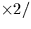
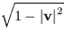

| RA,DA | D | apparent |
|---|---|---|
| AMPRMS | D(21) | star-independent mean-to-apparent parameters: |
| (1) | time interval for proper motion (Julian years) | |
| (2-4) | barycentric position of the Earth (AU) | |
| (5-7) | heliocentric direction of the Earth (unit vector) | |
| (8) | (gravitational radius of Sun)(Sun-Earth distance) | |
| (9-11) | v: barycentric Earth velocity in units of c | |
| (12) |  | |
| (13-21) | precession/nutation |
| RM,DM | D | mean |
|---|
SLALIB --- Positional Astronomy Library